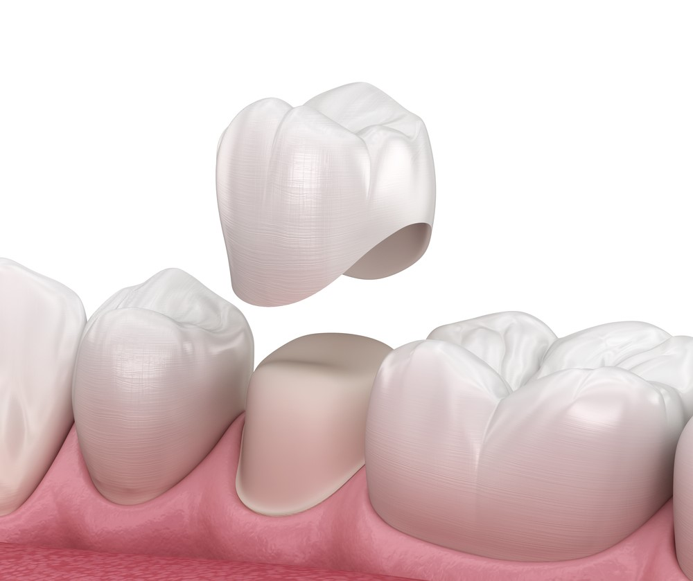
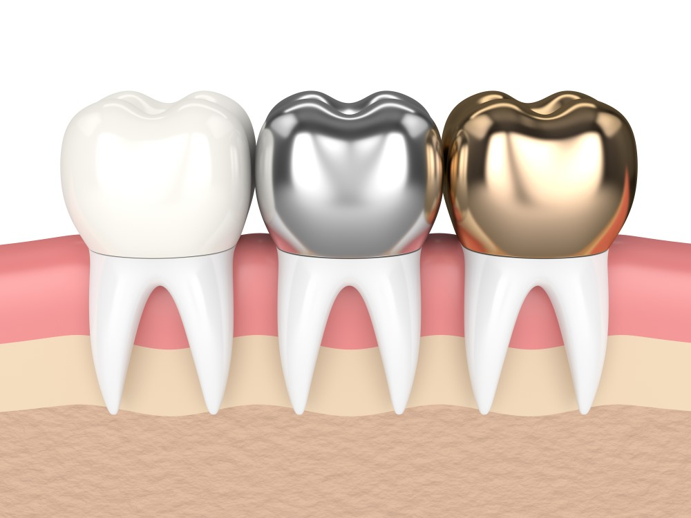
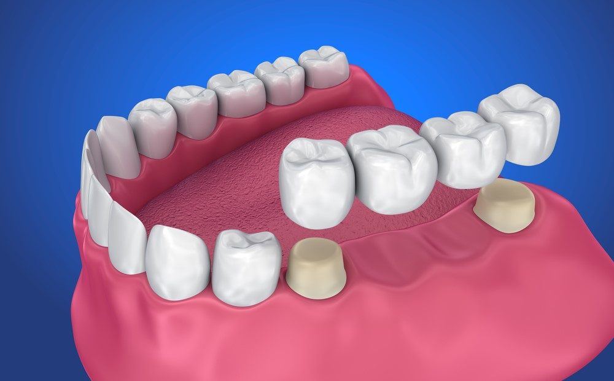
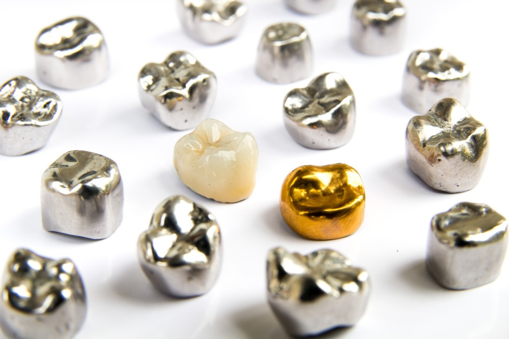

علاج وزراعة الأسنان
تعرَّف من خلال مقالاتنا على أحدث تقنيات علاج الأسنان، وأنجح الأساليب الوقائية للتمتع بأسنان صحيَّة قويَّة، إضافة إلى عمليات زراعة الأسنان، والجسور، والتقويم، وغيرها من المعلومات المتنوعة

تلبيسات الأسنان وأنواعها وتكاليفها في تركيا
جدول المحتويات
ما هو تلبيس الاسنان؟
تلبيس الأسنان هو غطاء أو "تاج" يغطِّي كاملَ الجُزءِ المرئيِّ للسن الضعيف أو التالف؛ إذ يربط السنَّ معًا، مما يوفّر له القوة ويمنع تفاقم الكسر، فيسمح هذا بتناول الطعام طبيعياً، ويحمي الأسنان من الالتهابات.
يعيد التاجُ السنَّ إلى شكله وحجمه ووظيفته الطبيعية، ويمكن أن يجعلَ التاجُ السنَّ أقوى أو يحسِّنَ مظهرَه.

تلبيس الاسنان الامامية
تلبيس الأسنان الأمامية هي التيجان أو الجسور في مقدمة الفم.
وتتطلب اعتبارات خاصة بالمقارنة مع التيجان الخلفية، فالمظهر والجمالية لها الأهمية الكبرى.
غالبًا ما تُظهِر الأسنانُ الأمامية الطبيعيةُ اختلافاً في درجات اللون، وتختلف من شخص لآخر.
نحرص في علاجك الطبية، على مطابقة درجات الألوان لجميع التيجان بشكل دقيق مع كل سن، حتى تتلاءم تمام الملاءمة مع بقية الأسنان.
بفضل فريقنا الكامل والمتكامل نستطيع تلبيس الأسنان الأمامية بأحدث الوسائل على أيدي أمهر الأطباء.
تلبيس اسنان الاطفال
عادة ما تنتهي جلسة تيجان الأسنان للأطفال في زيارة واحدة، وتبقى في الغالب حتى سقوط السن، عند الثانية عشرة من عمر الطفل.
بالنسبة للأطفال، يمكن استخدام التاج على الأسنان الأولية (اللبنية) من أجل:
- حفظ السن المتضرر تضرراً بالغاً من التسوس؛ إذ لا يمكنه تحمل الحشو.
- حماية أسنان الأطفال المعرضين لخطر الإصابة بتسوس الأسنان، ولا سيما عندما يواجه الطفل صعوبة في مواكبة نظافة الفم اليومية.
- تقليل وتيرة التخدير العام للأطفال غير القادرين على التعاون الكامل مع متطلبات رعاية الأسنان المناسبة، بسبب العمر أو السلوك أو التاريخ الطبي.
طريقة تلبيس الاسنان
تنقسم طرق تلبيس الأسنان الى اثنتين رئيستين، التقليدية، وإجراء اليوم الواحد، وسنتعرف فيما يأتي على خطوات كل منهما:
- إجراء تلبيس الأسنان التقليدي، ستحتاج إلى زيارة طبيب الأسنان مرتين.
- يفحص طبيبُ الأسنانِ السنَّ الذي يحتاج إلى التاج، ويجهّزه، قد يتضمن ذلك إجراء أشعة سينية على الأسنان، وقد يشمل أخذَ قالبٍ عن الأسنان.
- يبرد طبيبُ الأسنان الطبقةَ الخارجية للسنّ، ويزيل جزءاً منها.
- يأخذ طبعةً عن الأسنان المشذَّبة والأسنان المحيطة.
- سيضع طبيب الأسنان تاجًا مؤقتًا على السن لحمايته.
- ترسل الطبعة إلى المختبر الذي بدوره يصنع التاج، وقد تستغرق هذه الخطوة عدة أسابيع.
- بعد أن يجهز التاج، في الزيارة التالية، سيتمكن طبيب الأسنان من تثبيت التاج على السن.
- إجراء اليوم الواحد:
في إجراء اليوم الواحد، يمكنك تخطي خطوة التاج المؤقتة.
- يأخذ طبيب الأسنان صورًا رقمية لفمك.
- باستخدام المسح الرقمي من الصور، يقوم طبيب الأسنان بإنشاء التاج في العيادة، قد تضطر إلى الانتظار نحو ساعة إلى ساعتين حتى يُصنَع التاج.
- بمجرد أن يصبح التاجُ جاهزًا، يُثبَّتُ على السن المطلوب، وتستغرق العملية بأكملها نحو ساعتين إلى أربع ساعات.
تركيب تلبيسة الاسنان
- الجزء الأول من الإجراء يتمثل في حقن مخدر موضعي لتخدير السن المطلوب والأنسجة المحيطة به.
- يمكن لطبيب الأسنان بعد ذلك إزالة التاج المؤقت من السن، ثم تنظيف السنَّ المعنيّ والأسنان المحيطة به جيدًا.
- ينظّف الطبيبُ الأسنانَ أولاً، ويجففها بعزلها عن اللعاب، وتطبيق عامل مزيل للحساسية؛ لتأمين التاج الدائم قدر الإمكان.
- عندما يجفُّ السنُّ تماماً، يمكن لطبيب الأسنان وضع التاج الدائم على السن، مع التحقق من وجود اتصال بين الأسنان، كما أنه يستخدم خيطَ تنظيفِ الأسنان للتأكد من ملاءمة التاج بشكل صحيح.
يوفر فريقنا الطبي المتكامل تركيب تلبيسة الأسنان بما يتلاءم مع المظهر الجميل والمضمون الفعال على أيدي أمهر الأطباء.
لصق تلبيسة الاسنان
يجب أن يُطْلَى التاجُ بالمادة اللاصقة بشكل متساوٍ على السطح الداخلي؛ لتجنب فقاعات الهواء، وألا يكون ممتلئًا أكثر من النصف؛ إذ يوضع التاج بثبات على السن النظيف والمعزول والجاف مباشرةً، مما يوفر قوة كبيرة وضغطًا ثابتًا لضمان التموضع الكامل والتخلص من الفائض من المادة اللاصقة. ويُسلَّط الضوءُ لعشرين أو ثلاثين ثانية، لتتماسك المادةُ اللاصقة بشكل أسرع وأفضل.
بمجرد أن تتماسك المادة اللاصقة، يُزال الزائد بعيدًا عن الهوامش، باستخدام الأدوات اليدوية، وتُنظَّف المناطق البينية بالخيط.
تلبيسات الاسنان وانواعها
عند الحاجة إلى تاج أو تلبيسة للأسنان، نبدأ التفكيرَ بأنواع تيجان الأسنان ومواءمتها؛ إذ يتوفر اليوم عديدٌ من أنواع التيجان التي تختلف حسب المواد والتكلفة والإجراءات واحتياجات المرضى.
ووفقاً للمواد المستخدمة في صناعة التاج والجسر. يمكن صناعة التعويضات من :
- تيجان ذهبية
التيجان الذهبية مزيجٌ من النحاس ومعادن أخرى، مثل النيكل أو الكروم. والمزية الرئيسة للتيجان الذهبية قوتُها ومتانتها.
- التيجان الخزفية بالكامل
وتُعَدُّ أكثرَ أنواعِ التيجان شيوعًا في الوقت الحاضر، إذ إنها مصنوعة بالكامل من مادة البورسلين.
- التيجان الخزفية والمعدنية
تيجان البورسلين والمعدن هي نوع آخر من تيجان الأسنان المستخدمة على نطاق واسع؛ إذ توفر القوة (بسبب هيكلها المعدني) والجمالية (بسبب طبقة الخزف التي تغطي الغطاء).
- تيجان زركونيا
الزركونيوم مادة جديدة نسبيًا، تجمع بين قوة المعدن وجماليات التيجان الخزفية. وقد أصبحت الزركونيا عاليةَ الشفافية، كما أن تيجان الزركونيا ذات الطبقات صارت خيارًا أكثر شيوعًا في الآونة الأخيرة.
- اي - ماكس: تيجان الليثيوم ديسيليكات
يُعرَف أحدثُ نوعٍ من التيجان في طب الأسنان اليوم باسم أي- ماكس، إنه نوع من التاج الخزفي بالكامل المصنوع من ثنائي سيليكات الليثيوم (كما أنه خفيف ورقيق).
نقدم في علاجك الطبية كافة التيجان المناسبة، مع فريقنا المتكامل، بأحدث الوسائل على أيدي أمهر الأطباء.

اشكال تلبيسات الاسنان
- حسب المنطقة المغطاة:
- تغطية الجزء التاجي بالكامل: إنه يغطي الجزء التاجي من السن كاملاً، مثل التاج المعدني الكامل، وتاج البورسلين المعدني، أو التاج المصنوع بالكامل من مادة بلاستيكية.
- تغطية جزئية للجزء التاجي: أجزاء فقط من تاج السن مكسو أي 3/4 السن .
- الاستبدال الكامل: استبدال السن بالكامل مع الاحتفاظ بالجذر الطبيعي، وذلك عن طريق الوتد الممتد داخل مساحة قناة الجذر.
- حسب عدد الوحدات
- التاج:
هو ترميم أو تعويض سني ثابت يغطي السطح الخارجي لتاج السن، يعمل على إعادة وظيفة السن نفسه، وكذلك شكله، كما يقوم بحماية بنية السن المتبقية.
- الجسر:
إنه تعويض سني ثابت، مصمم ليحل محلَّ الأسنان، أو الأسنان المفقودة [واحدة أو أكثر] كما أنه لا يمكن للمريض إزالتها.

تلبيس الأسنان بالسيراميك
يتكون التاجُ المصنوع بالكامل من السيراميك عادةً من البورسلين، أو أي نوع آخر من السيراميك، كما هو الحال مع جميع المواد، ويوضع فوق سنٍّ محضر لاستعادة مظهره أو شكله أو هيكله.
هذه التيجان مثالية لترميم الأسنان الأمامية؛ لأنها شفافة، وتشبه الأسنان الطبيعية. تُعَدّ جميعُ التيجان الخزفية أفضلَ خيارٍ جماليٍّ يمكن للأسنان أن تحصل عليه اليوم.
وهذا بالتأكيد أكثر أنواع التيجان استخداماً في الوقت الحاضر، إنها مصنوعة بالكامل من مادة البورسلين.
تيجان البورسلين والمعدن (PFM)) هي نوع آخر من تيجان الأسنان المستخدمة على نطاق واسع؛ إذ توفر القوة (بسبب هيكلها المعدني) والجمالية (بسبب طبقة الخزف التي تغطي الغطاء).
بفضل فريقنا الكامل والمتكامل نستطيع تلبيس الأسنان بالسيراميك بتقنيات عالية ترضي زبائننا الكرام.
تلبيس الاسنان المؤقت
تلبيس الأسنان المؤقت هو غطاء على شكل السن، يحمي السن الطبيعي أو الزرعة حتى صنع التاج الدائم وتثبيته في مكانه.
ولأن التيجان المؤقتة أكثر حساسية من التيجان الدائمة، فمن المهم توخي الحذر عند استخدام الخيط أو المضغ أثناء وجود تاج مؤقت في مكانه.
يستخدم التاج المؤقت من أجل:
- حماية السن الطبيعي (أو موقع الزراعة) واللثة.
- يسمح لك بالابتسام طبيعياً دون فجوة.
- يحد من حساسية الأسنان أو اللثة.
- يحافظ على التباعد الصحيح بين أسنانك.
- يساعدك على المضغ والأكل.
- يساعد طبيبَ الأسنان في تقييم كيفية عمل التاج.
قد يغطي التاج المؤقت الغرسة أو السن الذي خضع لعلاج قناة الجذر أو السن الذي تم إصلاحه. يمكن استخدامه لأي سن بمفرده، أو يمكن أن يكون جسرًا فوق أكثر من غرسة أو سن.
تلبيس الاسنان بالفضة
بسبب جماليتها المحدودة، لا تُستَخدم التيجان المعدنية الكاملة بشكل شائع في طب الأسنان اليوم.
تستخدم تيجان الأسنان المعدنية الكاملة عمومًا الذهب أو المعادن الأساسية مثل الكروم أو النيكل.
هناك العديد من المعادن التي يمكن استخدامها في تيجان الأسنان، ومنها الذهب والبلاديوم والنيكل والكروم. ونادرًا ما تتشقق التيجان المعدنية أو تنكسر، كما أنها تدوم أطول فترة من حيث التآكل، وتتطلب إزالةَ كميةٍ صغيرة من أسنانك فقط، كما يمكن من خلالها أيضًا تحمل قوى العض والمضغ.
اللون المعدني هو العيب الرئيس لهذا النوع من التيجان، وبذا، فالتيجان المعدنية خيار جيد للأضراس الخلفية.
نقدم في علاجك الطبية كافة الخدمات المرتبطة بتلبيس الأسنان، بالطرق الفاعلة التي تحمي الأسنان ومظهرها الجميل.

اسعار تلبيسة الاسنان في تركيا
عادة ما يعتري موضوع الأسعار الكثير من الغموض وعدم الوضوح، وذلك لأسباب عديدة، أهمها اختلاف الحالة من شخص لآخر، واختلاف الخطة العلاجية، إضافة إلى المادة المصنعة للتلبيسة، وكذلك الدولة المصنعة لها، ويمكن القول إن أسعار تلبيسة الأسنان في تركيا تبدأ من مئة وخمسة وثلاثين يورو للسن الواحد لتلبيسة الزركونيم، بينما تبدأ الأسعار من مئة يورو للسن الوحد لتلبيسة البورسلين.


ما بعد تلبيس الاسنان
يمكن أن تمتد صلاحية تلبيس الأسنان لمدة خمس عشرة سنة، ويُعَدّ تلبيس الأسنان ضروريًا في العديد من حالات الأسنان لحماية الضعيفة منها، أو لاستعادة مظهر السن المكسور، أو لإجراء تغيير تجميلي، أو لتغطية زراعة الأسنان، أو حتى لتثبيت جسور الأسنان في مكانها.
أهم عامل في إطالة عمر التيجان هو الحفاظ على نظافة الفم.
يشمل ذلك تنظيف الأسنان بالفرشاة مرتين يوميًا، والتنظيف بالخيط، وإجراء عمليات تنظيف وفحوصات منتظمة للأسنان، إضافة إلى ذلك، قد تساعد التغييرات في نمط الحياة على إطالة عمر التيجان؛ إذ يمكن أن يؤدي تجنب الأطعمة الصلبة، مثل الحلوى الصلبة والثلج والمكسرات، إلى حماية التيجان.
لن تدوم تيجان الأسنان مدى الحياة، ولكن إذا حافظت عليها بشكل صحيح واستمعت إلى توصيات طبيب أسنانك، فيجب أن تتوقع استمرارها لعقد من الزمان على الأقل.
معظم نصائح الرعاية بعد العملية واضحة إلى حد ما: تجنب الأطعمة الصلبة أو التي تتطلب مضغًا - مثل الثلج أو الحلوى - التي قد تتلف تاجك. فإذا كنت معتادًا على صرير الأسنان، فإن معظم أطباء الأسنان ينصحون المرضى بارتداء واقٍ للفم في الليل لتوفير الحماية.
بمرور الوقت، سوف يؤدي الطحن المتكرر إلى تآكل التاج (أو الأسنان عموماً). ضع في اعتبارك أن العناية بالفم القياسية، مثل التنظيف المستمر بالفرشاة والخيط، سيمنع التسوس وأمراض اللثة للأسنان المصابة.
علاجك الطبية توفر أسعاراً تنافسية، من خلال فريق مكون من أمهر الأطباء، وبالوسائل الحديثة والتقنيات المتطورة.
تلبيس الاسنان قبل وبعد
تعتري عملية تلبيس الأسنان الكثير من النتائج الإيجابية، من حيث الوظيفة، وحماية الأسنان، إضافة إلى المظهر الجيد والابتسامة الجميلة.
الاكل بعد تلبيس الاسنان
يمكن أن يخدم تاج الأسنان بعض المرضى لمدة تصل إلى خمسة عشر عامًا.
لحسن الحظ، فإن تيجان الأسنان لا تتطلب أي عناية خاصة بالفم، باستثناء مراعاة العناية الجيدة والسليمة بالأسنان، مثل تنظيف الأسنان بالفرشاة والخيط مرتين يوميًا على الأقل، إذ إن العناية بتاج الأسنان أمر سهل للغاية.
بصرف النظر عن التنظيف المنتظم بالفرشاة والخيط، إن الكثير من ممارسات العناية بالفم المناسبة لها علاقة بالأطعمة والمشروبات التي يتم تناولها بعد إجراء تاج الأسنان.
قبل أن تغادر عيادة الأسنان بعد الزيارة الأولى، يثبّت طبيب الأسنان الخاص بك تاجَ الأسنان المؤقت، ومن ثم، فإن التاج المؤقت ليس بقوة التاج الدائم.
يحمي تاج الأسنان المؤقت السنَّ الذي تم إصلاحه، ويمنع البكتيريا من إصابة الأسنان، ويمنع الحساسية كذلك.
مع تاج الأسنان المؤقت، من المهم جدًا تجنب تناول أي شيء صلب أو مقرمش أو لزج جدًا. وذلك لمنع التيجان من الانزلاق أو الكسر تحت قوة كبيرة.
بعد أيام قليلة من الإجراء، قد يظل السن واللثة اللذان تم علاجهما حساسين، وفي بعض الأحيان يكون من الأفضل لك الالتزام بنظام غذائي أكثر ليونة.
بعد تثبيت تلبيس الأسنان الدائم وزوال تأثير التخدير، يجب أن يكون المرضى قادرين على تناول أي أطعمة كالمعتاد.
ومع ذلك، فمن الأفضل تجنب الأطعمة اللزجة والصلبة في أول أربع وعشرين ساعة بعد الإجراء.
بفضل فريقنا الكامل والمتكامل نستطيع تلبية احتياجات زبائننا الكرام من الاستشارات الطبية المتواصلة للإبقاء على أفضل وضع للأسنان.
الم اللثه بعد تلبيس الاسنان
تكون بعض حساسية اللثة المحيطة أمرًا شائعًا بعد وضع تاج الأسنان، بسبب التهيج الناتج عن المادة اللاصقة.
في معظم الحالات، يكون جل التخدير الموضعي المتاح بسهولة في معظم الصيدليات قادرًا على المساعدة في تخفيف ذلك، وغالبًا ما يكون أكثر فعالية من الأدوية الفموية مثل الإيبوبروفين.
الالم بعد تلبيس الاسنان
بينما يمكن لتلبيس الأسنان تغطية الأسنان التالفة وحمايتها بشكل فعال، يتفاجأ كثيرون من أنها لا تقي من آلام الأسنان، إذ إنه من الممكن أن تتسبب بآلام الأسنان.
في الواقع، الأسنان التي تم تلبيسها هي عرضة للمشاكل مثل الأسنان العادية.
قد تشعر بعدم الراحة أو الحساسية أو الضغط حيث يجلس التاج بشكل كامل. أو قد تعاني من ألم مستمر في الأسنان.
وقد يرجع ذلك لأسبابٍ، مثل:
- تسوس الأسنان تحت التاج
- الالتهابات
- كسر في السن أو التاج
- صرير الأسنان.
- التاج غير ملائم بشكل صحيح.


اطلع على أحدث المنشورات والأخبار الطبية
عمليات شفط الدهون بالفيزر في تركيا والأسعار 2021
يعتبر شفط الدهون بالفيزر من أفضل عمليات علاج السمنة المفرطة. تعرف معنا على مميزات وعيوب شفط الدهون بالفيزر وكيف تتم العملية وشاهد الفرق قبل وبعد في تركيا.
طرق علاج طول النظر في تركيا وأحدث التقنيات
يعاني الكثير من كبار السن وحتى البالغين من مرض طول النظر . سنتحدث في هذا المقال عن كيفية علاج طول النظر وأسباب هذا المرض ونسبة نجاح العلاج .
الفرق بين زراعة الشعر في ايران وتركيا 2021
بالرغم من أن أسعار زراعة الشعر بين تركيا وايران لا تختلف كثيرا إلا أن هنالك الكثير من الفروق التي قد تحدد لك الدولة الأفضل لزراعة الشعر فيها.
طرق علاج قصر النظر في تركيا وأحدث التقنيات
يعاني الكثير من الأطفال وحتى البالغين من مرض قصر النظر. سنتعرف في هذا المقال على أفضل طرق علاج قصر النظر وأسباب هذا المرض ونسبة نجاح العلاج .